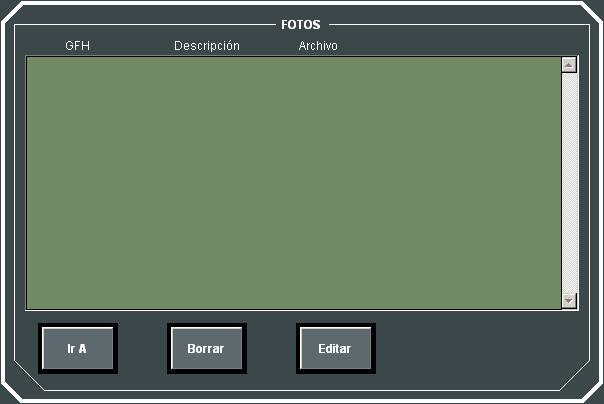

Edición de fotos Tácticas y de Audio
Mediante este diálogo el Instructor puede consultar la lista de Fotos que se realizaron en el transcurso del Ejercicio que se está repitiendo. Seleccionando una de estas Fotos el Instructor puede realizar las siguientes acciones:
- Ir A: La Repetición del Ejercicio se sitúa parada en el instante asociado a esta Foto.
- Borrar: Eliminación de la Foto seleccionada.
- Ver: Edición de la Foto seleccionada. La edición se realizará con la herramienta predeterminada del Sistema Operativo para bitmaps o wave según el tipo de foto seleccionado.
